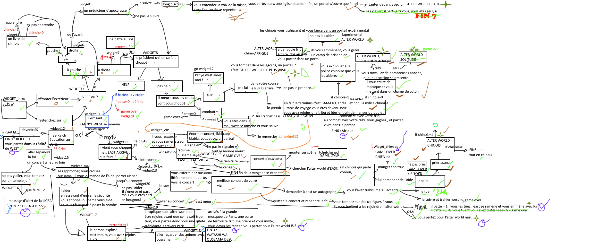
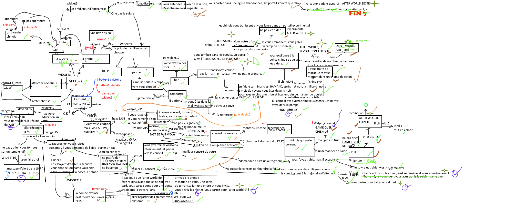

Projet Alpha
Retour à la page d'accueil
Date de sortie : 2 janvier 2023
Nouvelle visuelle type-2
Synopsis : Paris, 2020, la fin est proche mais la fin de quoi ? Sortez de chez vous pour le découvrir.
C'est une amélioration de la première nouvelle visuelle "GrandBail" qui ne permettait pas assez de choix.

Des choix importants qui impactent le reste de l'aventure. Il y a 7 fins différentes avec leurs blagues.
 

Point de vu technique.
- Le jeu tourne sur n'importe quel ordinateur assez récent. Une configuration spécifique pour les jeux n'est pas nécessaire.
- Le jeu fait 326 mo.
- Des choix permettent de rajouter des interactions. Ainsi l'aventure est réellement organique.
Installer le .rar du jeu
Retour à la page d'accueil